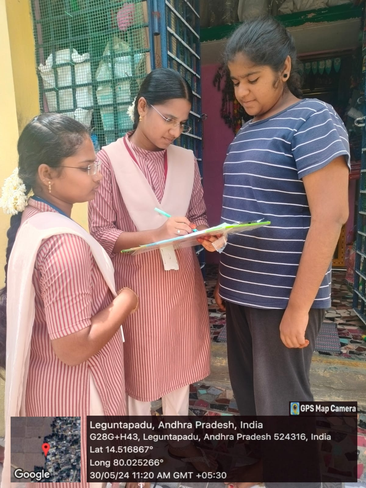

Week 1
- We Conducted an awareness program on digital transactions in Leguntapadu village, Nellore district, to kickstart the project.
- We also Conducted surveys in the local area to assess awareness levels about digital transactions.
- Later we Continued conducting surveys to gather more insights into digital transaction awareness.
- Raised an awareness and Explained the known advantages and uses of digital transactions to the community.
- Planned strategies to increase awareness and educate about lesser-known aspects of digital transactions.
Week 2
- Firstly,We Visited local banks in Inamadugu for personal research on digital transactions.
- Again Continued surveys at banks to deepen understanding of digital transaction processes.
- We Organized an awareness program on installing UPI payment apps.
- Facilitated the installation of various UPI payment apps across different areas of Leguntapadu.
- Educated about specific apps like PhonePe, Google Pay, Paytm, etc.
- Continued education on private business payment platforms such as Amazon Pay and BharatPe.
Week 3
- Me and my team Verified detailed processes involved in various types of digital transactions.
- We Visited various types of merchants and retail shops to understand their digital payment methods.
- Again Conducted an awareness program explaining different types of digital payments to local residents.
- We also Surveyed college students to gather their perspectives on digital transactions.
- Mainly We Assisted farmers in adopting various digital payment methods.
- Studied different methods and types of digital payments available.
Week 4
- I Learned about the cost-saving benefits of digital transactions.
- Explored major challenges faced in digital transactions.
- We Discussed the benefits of UPI to banks and fintech companies.
- We Conducted a survey on mobile banking usage.
- Mainly focused on Explored barriers preventing wider adoption of digital transactions among local residents.
- Conducted surveys across various areas to gauge overall understanding and journey in digital payments.
Week 5
- We Researched current regulations governing digital payments.
- Raised awareness about support centers and common payment issues.
- Conducted a survey on automatic money debiting from user accounts.
- Investigated disadvantages related to payment issues .So that it would help for our research and to conduct surveys
- Conducted a comprehensive overview survey of digital transaction knowledge gained so far.
- Delivered conclusions and insights gained from studying digital transactions.
Week 6
- We Organized an awareness program on factors influencing digital transactions.
- Studied government initiatives aimed at promoting digital payments.
- Discussed various modes of digital payments available.
- Conducted an awareness program on benefits of digital transactions for both government and citizens.
- Explored and discussed major reasons for digital transaction failures.
- Hereby,Concluded the community service project by summarizing key learnings and insights on digital transactions.
